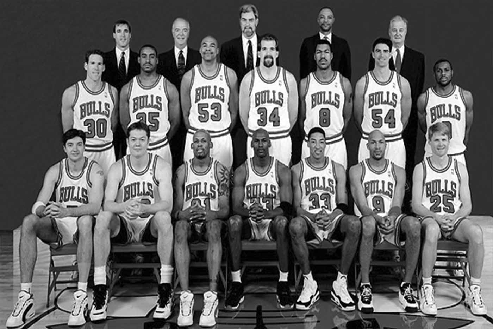

HISTORIA
Saskibaloi estatalak 1923ko uztailaren 31an ofizialtasuna lortu zuen, egun berean Federazio Nazionala
osatu zen. Hala ere, bederatzi urte pasatu behar izan ziren lehen txapelketa ofiziala 1932/33
denboraldian jokatzeko, Rayo Club de Madrid nagusitu zela.
Denboraldian liga berreskuratu zuten eta ordutik aurrera liga hazten joan zen inolako traba, eragozpen
edo etenik gabe.

1945. urtean Bizkaiko Federazioak bere lehenengo Txapelketa1 Probintziala antolatu zuenerako, Espainian
bederatzi Txapelketa Nazional jokatuak ziren (Madrildarren eta Katalanen artean bereziki). Francisco
Manrique de Lara jauna, Madrildik etorria, Bilboko Irakaskuntza Institutu batera lan egitera etorri zen.
Bilbon baloiaren eta saskiaren
kirolaren hasia erroturik zegoen jada, baina Club Deportivo deritzonean mugatuta zegoen 1934 eta 1935
urteetan.
What?
Hedabideek gutxi idazten zuten kirol berri honen inguruan, erredaktoreek saskibaloiaren teknikari buruz
ezer gutxi baitzekitelako. Horregatik, hainbat urtez saskibaloia ezezagun bat izan zen jendearentzat.
Hori dela eta, Francisco Manrique de Lara jaunak hamaika ahalegin egin zituen arren, asko kostatu
zitzaion saskibaloi federatua martxan jartzea. Azkenean, 1945eko azaroaren 29an honako hau idatzi zion
FEBeko presidenteari.
Where?
«Celebro poder comunicarle que, después de laboriosas gestiones, he llegado a un acuerdo con los...
Who?
Gutun honen bidez, Bizkaiko Saskibaloi Federazioa sortu zelaren berri eman zion Manrique de Larak Jesús
Querejeta jaunari, lehenengo txapelketa antolatuko zutela, etab.